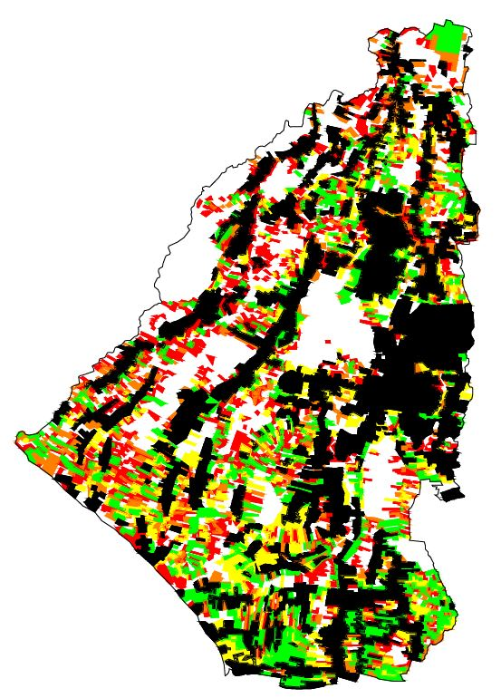
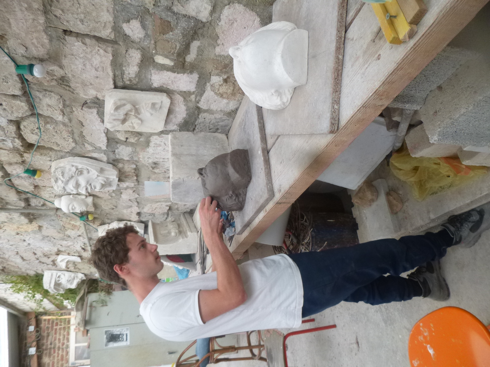
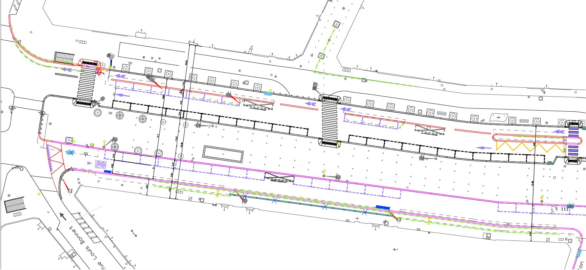
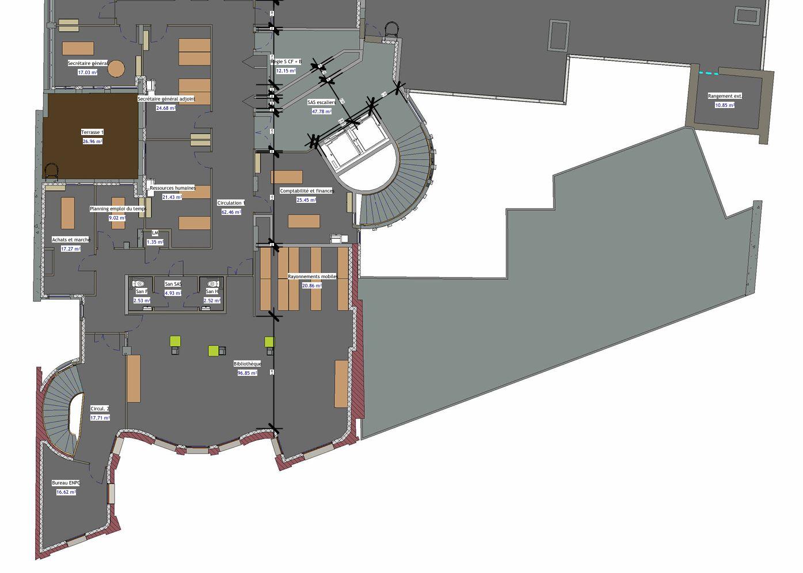
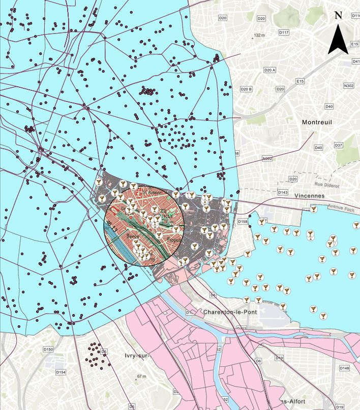

Ma formation :
Ecole d'ingénieur en Génie Urbain
EIVP, Paris | Septembre 2021 - Juillet 2024
Formation centrée sur la gestion de projet, le management, la pratique de logiciels, la connaissance/le comportement des matériaux
Intitulé des cours : Assainissement, Béton armé, Commande publique et Jeux d'Acteurs, Communication, Construction bois, Construction métallique, Conception durable, Conception et aménagements cyclables, Cycle de vie du bâtiment, Data visualisation, Déchets, Droit, Eau potable, Economie et organisation de l'entreprise, Formes urbaines et Société, Géotechnique et fondations, Hydrologie, Management d’entreprise, Management de projet, Numérique appliqué au Génie Urbain, Participation citoyenne et co-construction, Pilotage d'opération d'aménagement, Politique territoriale et finances publiques, Principes de conception d'architecture, Probabilité et Statistiques, Python, Recherche opérationnelle, Résilience aux risques, Résistance des Matériaux, Sécurité incendie, Sols et sous-sols urbains, Systèmes d'information géographique, Techniques de chantier
Classe préparatoire ATS Génie Civil
Lycée Emmanuel Héré, Laxou | Septembre 2020 - Juin 2021
Formation axée sur le Génie Civil, la Physique, la Mécanique et les Mathématiques
DUT Mesures Physiques
IUT Paris Diderot, Paris | Septembre 2018 - Juin 2020
Formation professionnalisante, très généraliste parcourant la globalité des sciences de laboratoire, de l'électronique à l'optique en passant par le nucléaire, la physique, la chimie, les mathématiques ...
BAC Scientifique SVT, option Mathématiques
Lycée Galilée, Cergy | Septembre 2015 - Juin 2018
Mes expériences professionnelles :
Stage de fin d'études :
Cycle Up | Février - Juillet 2024
Chef de projet réemploi ex-situ, diagnostics PEMD, suivi de chantier de déconstruction et conseil en stratégies de réemploi
Avec l'équipe de diagnostiqueurs PEMD de Cycle Up après avoir réalisé le plus grand diagnostic de l'entreprise
Stage de recherche :
Politeknik Negeri Bali, Indonesia | Juin - Août 2023
Etude de l'application des règles d'urbanisme et de l'évolutuion de la zone urbaine

Carte de l'évolution de la zone urbaine de la province de Badung à Bali, entre 2002 et 2023
Stage d'encadrement :
Jean Lefebvre | Juin - Août 2022
Travaux de voirie, Adaptation d'un parking BUS de la RATP à l'alimentation électrique et gaz naturel
Stage ouvrier :
Patrimoine & Rénovation | Février 2023
Manoeuvre sur le chantier de réhabilitation de la Maison de la Radio
Jobs d'été :
Barman,
Livreur de pizzas
Mes expériences extra-professionnelles :
Milieu associatif :
Bureau des Arts de l'EIVP | Avril 2022 - Avril 2023
Organisation d'événements : Voyage à Budapest, Scène ouverte, Drag Race EIVP, ... + organisation d'ateliers : Sculpture, Théâtre ...
Sculpture et taille de pierre :
Association Rempart | Juin - Août 2020
Pratique de la sculpture et de la taille de pierre sur un chantier de restauration du patrimoine


Photos sur le site du château de Coucy, géré par l'association Rempart
Mes compétences :
Logiciels de CAO :
AutoCAD, Revit, Visionneuses BIM
Réalisation de nombreux projets AutoCAD et Revit en cours

Exemple de projet d'aménagement du boulevard de Belleville réalisé sur AutoCAD

Exemple de modélisation de l'EIVP sur Revit
Logiciels de Systèmes d'Information Géographique (SIG)
ArcGis

Modélisation des fontaines à boire du 12e arrdt
Code (Niveau intermédiaire) :
HTML, JS, CSS (Langages de développement WEB)
VBA (Langage des logiciels de la suite Office)
Python, C#
- J'ai notamment codé cette page web en HTML, CSS et JS, dont le code-source est accessible sur le lien suivant : Voir le code sur GitHub
- J'ai également codé des Macros en VBA pour automatiser des processus sur Excel et Word au cours de mon stage de fin d'études chez Cycle Up
Logiciels de la suite Office :
Excel, Word, PowerPoint, Teams, Outlook, Drive, Power BI
Utilisation quotidienne et avancée de ces logiciels au cours de mon cursus et de mes différents stages
Montage vidéo :
Montage vidéo pour la réalisation de vlogs avec l'application Cap Cut, accessibles ici : Instagram
Linguistiques :
Bilingue en anglais